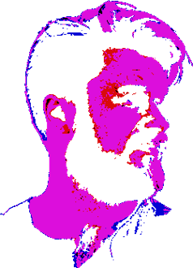
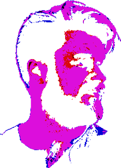
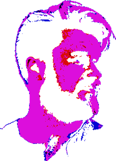
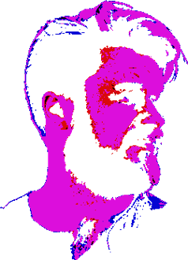

6BM is a young band which has it's origins in the city of Lublin, playing music described as electrorock. Band members aim to convey emotions, reflexion but also hope.
They are inspired by various genres like: alternative rock, nu-metal, synthwave or even drum'n'bass. As for now they released their debut EP - TRINITY and they started working on their first full length album.